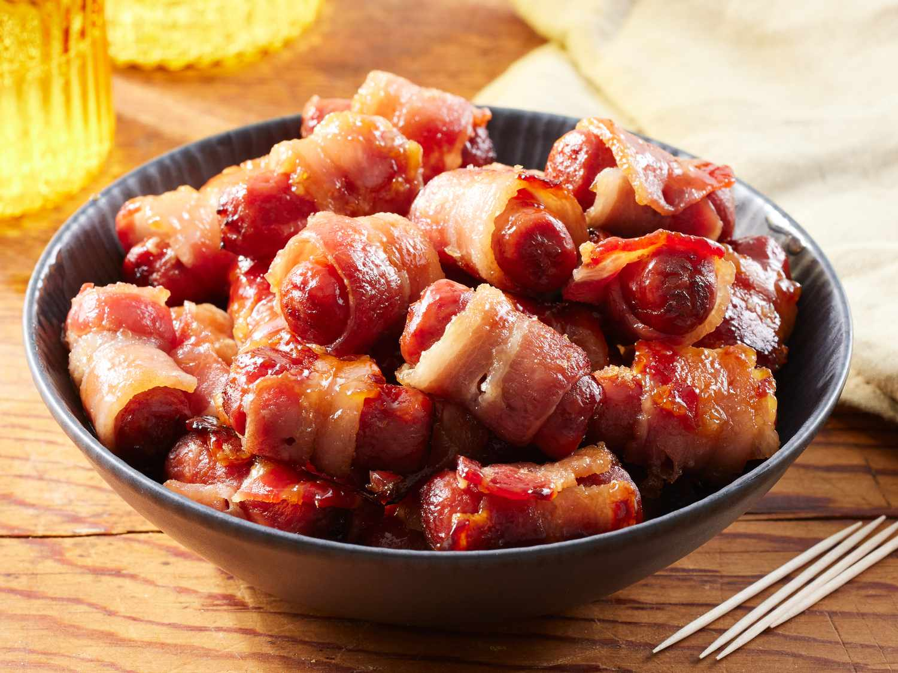

Brown Sugar Smokies

These bacon-wrapped little smokies with a brown sugar glaze are sweet, smoky, and super easy to make for parties or holiday appetizer. You can make these little smokies on skewers or toothpicks to secure the bacon.
These bacon-wrapped little smokies, with a sweet brown sugar glaze, are a crowd-pleaser.
Home cooks agree that baking on a rack stops burning sugar and keeps bacon crispier.
All recipes member Carolyn Cerny Manley raves, "They were yummy and easy to make."
Ingredients
- 1 pound bacon
- 1(16 ounce) package little smokie sausages
- 1 cup brown sugar, or to taste
Steps
- Gather all ingredients. Preheat the oven to 350 degrees F (175 degrees C).
- Cut bacon slices into thirds and wrap each strip around a sausage. Secure the wrapped sausages on wooden skewers, several to a skewer. Arrange the skewers on a baking sheet and sprinkle them liberally with brown sugar.
- ake in the preheated oven until bacon is crisp and sugar has melted into a glaze, 20 to 25 minutes, turning halfway through for even caramelization.
- Transfer to a serving platter and let stand 5 minutes before serving; the glaze will thicken as it cools. Serve and enjoy!
Home